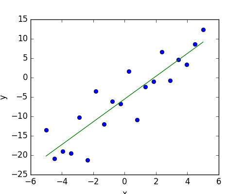

3.1.6.1.4. Simple Regression¶
Fit a simple linear regression using ‘statsmodels’, compute corresponding p-values.
Script output:
OLS Regression Results
==============================================================================
Dep. Variable: y R-squared: 0.804
Model: OLS Adj. R-squared: 0.794
Method: Least Squares F-statistic: 74.03
Date: Mon, 10 Oct 2016 Prob (F-statistic): 8.56e-08
Time: 22:14:08 Log-Likelihood: -57.988
No. Observations: 20 AIC: 120.0
Df Residuals: 18 BIC: 122.0
Df Model: 1
Covariance Type: nonrobust
==============================================================================
coef std err t P>|t| [0.025 0.975]
------------------------------------------------------------------------------
Intercept -5.5335 1.036 -5.342 0.000 -7.710 -3.357
x 2.9369 0.341 8.604 0.000 2.220 3.654
==============================================================================
Omnibus: 0.100 Durbin-Watson: 2.956
Prob(Omnibus): 0.951 Jarque-Bera (JB): 0.322
Skew: -0.058 Prob(JB): 0.851
Kurtosis: 2.390 Cond. No. 3.03
==============================================================================
Warnings:
[1] Standard Errors assume that the covariance matrix of the errors is correctly specified.
ANOVA results
df sum_sq mean_sq F PR(>F)
x 1.0 1588.873443 1588.873443 74.029383 8.560649e-08
Residual 18.0 386.329330 21.462741 NaN NaN
Python source code: plot_regression.py
# Original author: Thomas Haslwanter
import numpy as np
import matplotlib.pyplot as plt
import pandas
# For statistics. Requires statsmodels 5.0 or more
from statsmodels.formula.api import ols
# Analysis of Variance (ANOVA) on linear models
from statsmodels.stats.anova import anova_lm
##############################################################################
# Generate and show the data
x = np.linspace(-5, 5, 20)
# To get reproducable values, provide a seed value
np.random.seed(1)
y = -5 + 3*x + 4 * np.random.normal(size=x.shape)
# Plot the data
plt.figure(figsize=(5, 4))
plt.plot(x, y, 'o')
##############################################################################
# Multilinear regression model, calculating fit, P-values, confidence
# intervals etc.
# Convert the data into a Pandas DataFrame to use the formulas framework
# in statsmodels
data = pandas.DataFrame({'x': x, 'y': y})
# Fit the model
model = ols("y ~ x", data).fit()
# Print the summary
print(model.summary())
# Peform analysis of variance on fitted linear model
anova_results = anova_lm(model)
print('\nANOVA results')
print(anova_results)
##############################################################################
# Plot the fitted model
# Retrieve the parameter estimates
offset, coef = model._results.params
plt.plot(x, x*coef + offset)
plt.xlabel('x')
plt.ylabel('y')
plt.show()
Total running time of the example: 0.05 seconds ( 0 minutes 0.05 seconds)